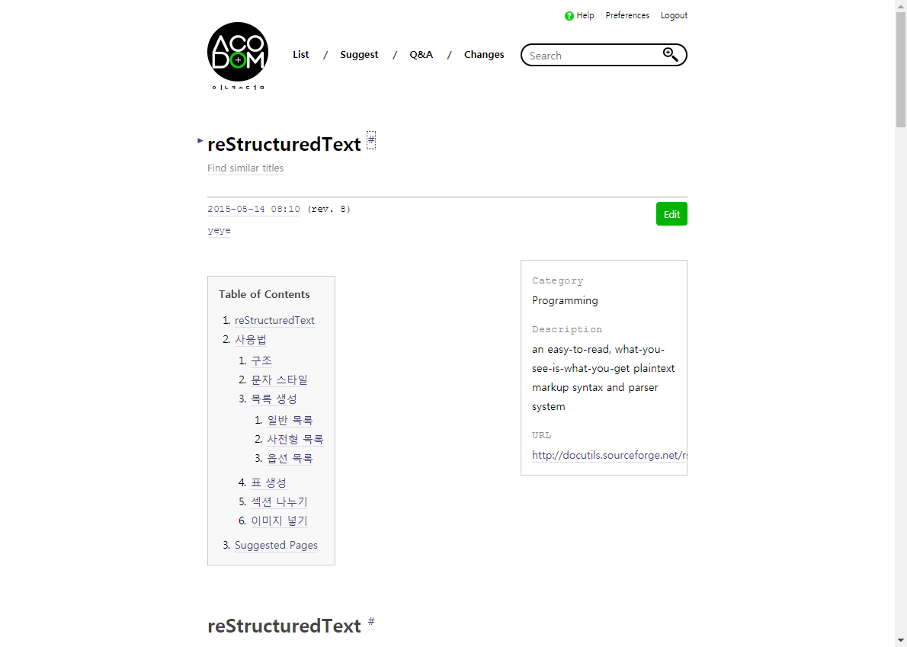
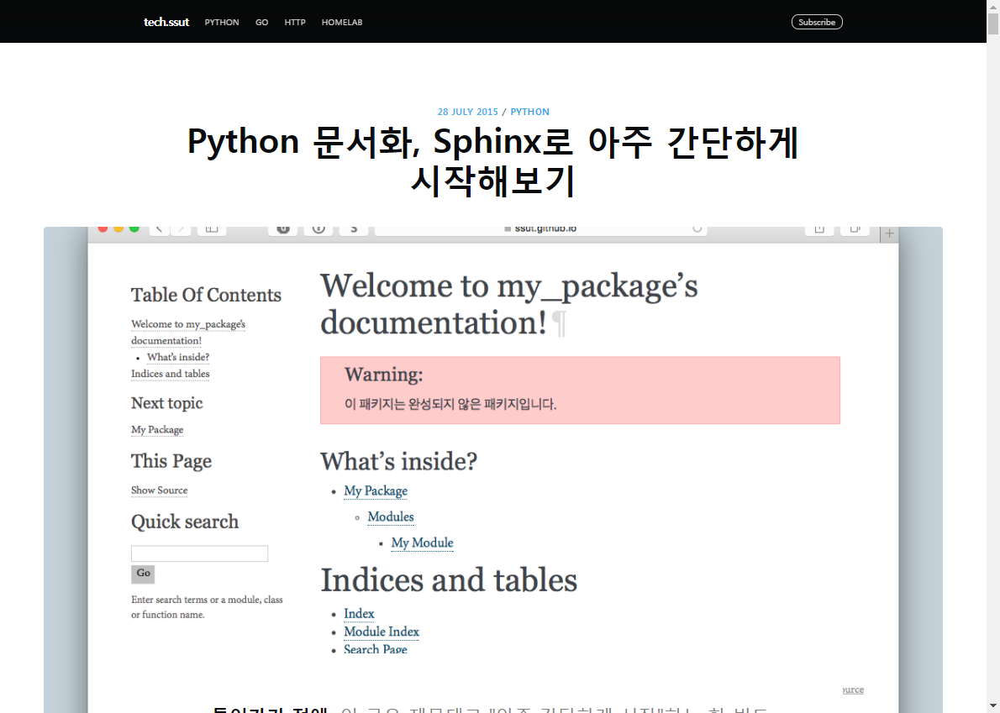
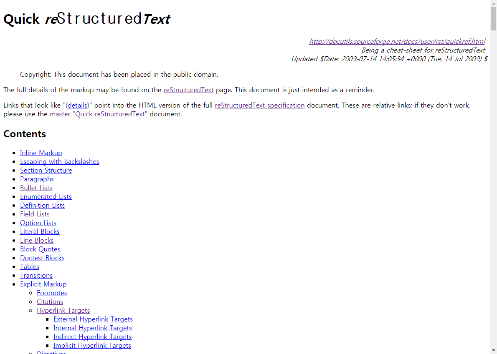
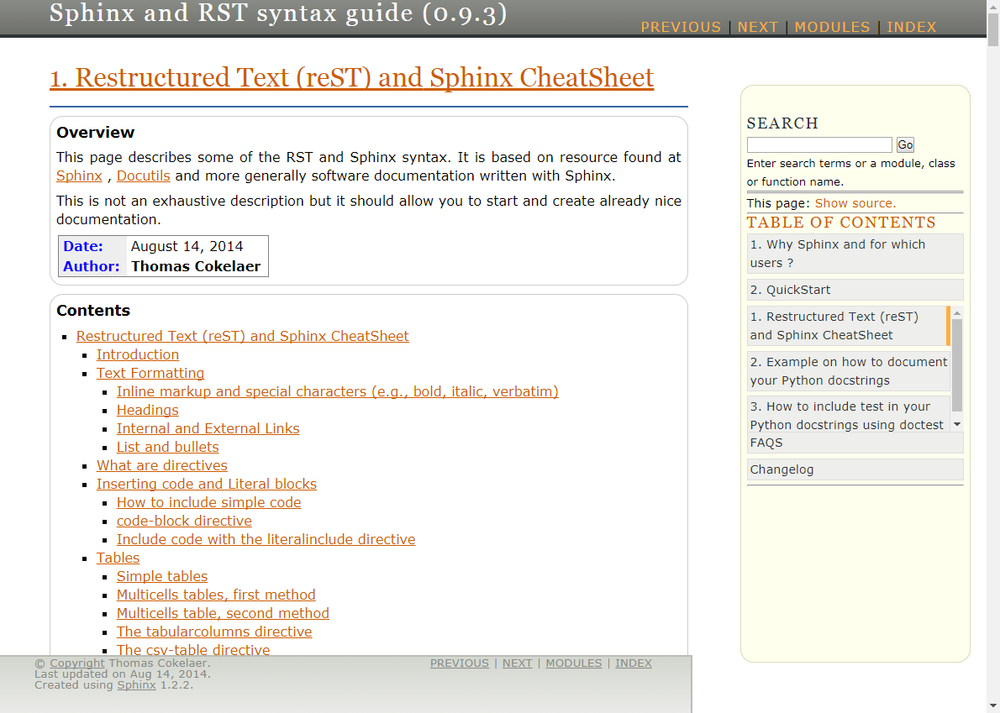

Reference¶
01 IncoDOM - reStructuredText¶
reStructuredText에 대한 개요와 사용방법을 예제로 설명. http://www.incodom.kr/reStructuredText
03 Python 문서화, Sphinx로 아주 간단하게 시작해보기¶
초보자를 위한 스핑크스 가이드. 낮은 버젼이라 최신 버전과 다른 점들이 있음. https://tech.ssut.me/2015/07/28/start-python-documentation-using-sphinx/
04 Quick reStructuredText¶
reStructuredText 다양한 사용법을 예제와 같이 수록. http://docutils.sourceforge.net/docs/user/rst/quickref.html#bullet-lists
05 Sphinx and RST syntax guide (0.9.3)¶
reStructuredText 다양한 사용법과 스핑크스의 숨겨진 기능들 소개. https://thomas-cokelaer.info/tutorials/sphinx/rest_syntax.html#images-and-figures
